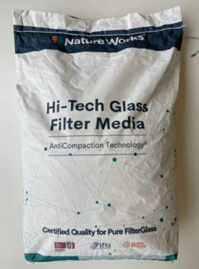

Nature Works · 承信代理
STAGE 系列玻璃濾料
依顆粒過濾需求，選擇濾料與粒徑配置

產品在流程中的角色
Nature Works STAGE 系列玻璃濾料
承信代理 Nature Works STAGE 系列玻璃濾料。STAGE 1 用於泳池循環水與工業用水過濾，STAGE 2、3 可依工業過濾需求選用。不同系列的粒徑與適用配置各有差異；STAGE 3 需先核對專用濾槽、支撐層及反洗條件。
- 玻璃顆粒濾料，用於水中顆粒截留
- STAGE 1、2、3 依用途與濾槽條件選用
- STAGE 3 需專用配置，反洗不採氣洗
Nature Works 型號系列
共 3 筆型號／項目